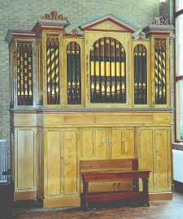 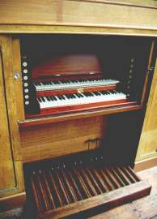
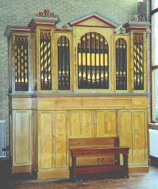 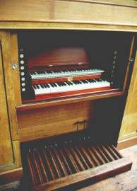Hrací stùl je ta èást varhan, odkud
varhaník nástroj ovládá. Slou�í mu k tomu celá øada kláves, spínaèù, páèek,
tlaèítek, sklopek a dalších zaøízení. Hrací stùl mù�e bıt pøímo souèástí
skøínì nástroje (vestavìnı v její dolní èásti, pak jej nazıváme „hrací
skøíò) nebo stojí samostatnì v jeho blízkosti. Elektrická traktura dnes
umo�òuje i stavbu vzdáleného, pohyblivého stolu, ovládání nástroje z více
stolù nebo naopak ovládání více nástrojù z jednoho stolu. Souèástí hracího
stolu jsou klaviatury (manuálové pro
ruce a pedál pro nohy hráèe), registraèní
zaøízení a pomùcky pro ovládání rejstøíkù nástroje (sklopky, táhla,
rukojeti...) a pomocná zaøízení pro rozšíøení mo�ností registrace, zjednodušení
obsluhy a zvıšení konfortu ovládání (crescendo, kolektivy, kombinace).
|
Ve starıch, vìtšinou menších varhanách se èasto setkáme s umístìním hracího stolu na boku skøínì. Toto umístìní znaènì zjednodušovalo konstrukci rejstøíkové traktury (u varhan se zásuvkovou vzdušnicí), pøípadnì umo�òovalo její celkové vypuštìní (viz popis mechanické rejstøíkové traktury). V tomto pøípadì manubria, umístìná nad manuálem pøímo ovládaly pøíslušnou zásuvku bez dalších elementù (pák, høídelù…). |
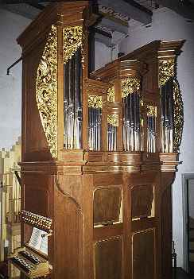 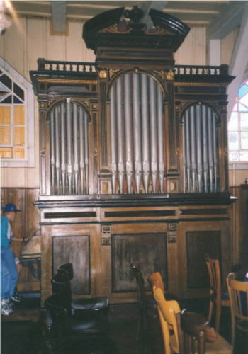 |
Hrací stùl mù�e bıt situován i zpøedu èi zezadu varhanní skøínì, mù�e k ní bıt pøistavìn nebo èásteènì èi zcela zapuštìn ve vıklenku (nice) jejího pláštì. V tomto pøípadì bıvá èasto mo�né hrací stùl zvnìjšku uzavøít. Na následující fotografii je hrací stùl v èele varhanní skøínì: |
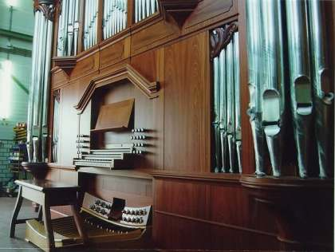
| A na tìchto fotografiích v jejich vıklenku (nice): |
| 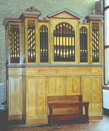 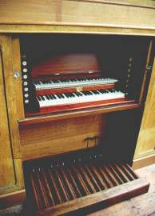 |
| Vlastní vıklenek mù�e bıt uzavírán pomocí �aluzií èi dvíøek, èasto ozdobnıch: |
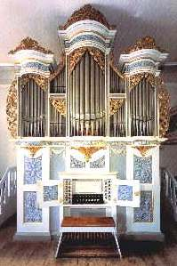 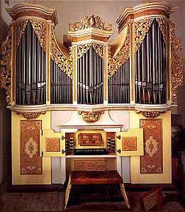 |
U varhan s pozitivem je hrací stùl jakoby uvnitø
nástroje (varhaník má èást nástroje pøed sebou, èást za sebou). Tyto èásti
mohou bıt od sebe pomìrnì daleko, èasto je však mezi nimi právì jen tolik
místa, aby se do nìj vešla varhanní lavice: |
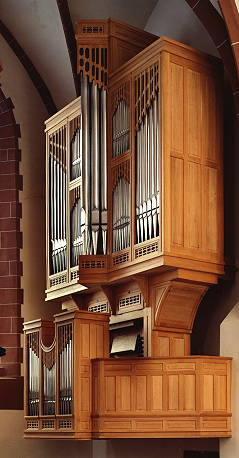 |
| 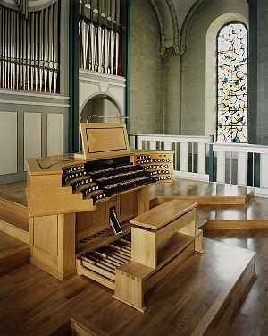 | Hrací stùl mù�e bıt oddìlen od varhan zcela a vùèi nástroji situován dle místní situace a potøeby (stojící èelnì, zády, našikmo…). Umístìní je vìtšinou odvozeno od velikosti volného prostoru v místì, kde stojí nástroj, typu traktury (veškeré impulsy od hracího stolu je nutno pøevést nezkreslenì a rychle do skøínì nástroje, nejvíce omezení tak pøináší mechanická traktura, o nìco lépe je na tom pneumatika, prakticky bez omezení pak elektrická traktura) a potøeb varhaníka (v koncertní síni je lepší, má-li varhaník nástroj pøed sebou, má s ním tak lepší sluchovou vazbu, v kostele je zase obvyklejší uspoøádání s nástrojem za zády, varhaník má pøehled o dìní v prostoru kostela pøed sebou). Na fotografii nalevo je pøíklad varhan se vzdálenım hracím stolem èelnì k nástroji. |
| Bì�né uspoøádání nástroje z našich kostelù - nástroj za zády varhaníka: |
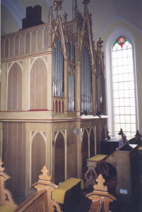 |
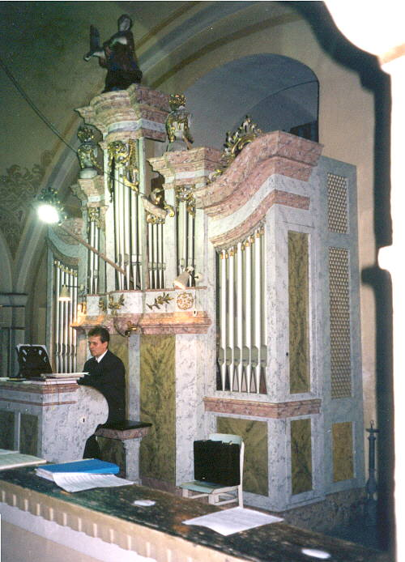 |
V pøípadì mechanické traktury jsou abstrakty vedeny
pod podlá�kou pod pedály, která je proti okolní podlaze mírnì zvıšena.
Obdobnì je tomu u pneumatické traktury (pod podlahou jsou rourky). Jak
vypadá takovı stùl v øezu ukazuje následující nákres (varhany u sv. Klotildy
v Paøí�i, Aristide Cavaillé Coll, 1858): |
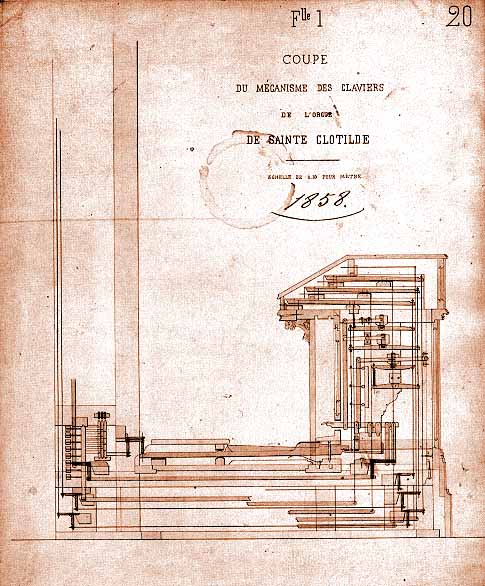 |
| V koncertních síních stojí stùl, pokud není pohyblivı, vìtšinou na boku pódia kolmo nebo šikmo k prospektu nástroje: |
|
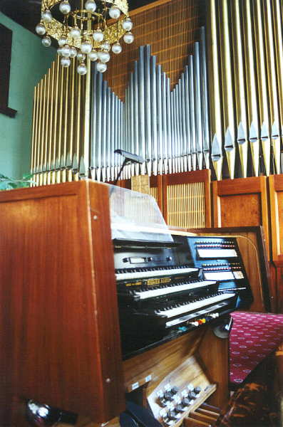 |
Velké nástroje, pøedevším koncertní, se èasto staví
s dvojicí stolù. První, vìtšinou mechanickı je souèástí varhanní skøínì,
druhı, témìø vıhradnì elektrickı je buï pohyblivı (v koncertní síni je
jej mo�no umístit na pódiu pro orchestr v místì dle aktuální potøeby interpreta)
nebo stojí v jiném prostoru (napø. v kostele dole, v prostoru lodi èi
presbytáøe): |
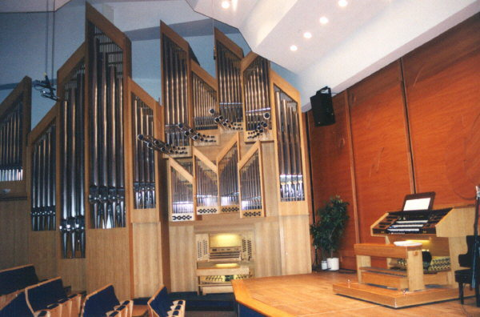 |
V Boardwalk Hall (døíve Convention Hall) v Atlantic
City jsou nejvìtší svìtové varhany (zapsané v Guinessovì knize rekordù
– 33 tisíc píš�al) s dvìmi hracími stoly. Pohyblivı – pìtimanuálovı, umístìnı
ve foyeru budovy a hlavní – sedmimanuálovı, situovanı v koncertní síni
ve speciální válcové „budce“. Více se o tìchto varhanách dozvíte napø.
zde: |
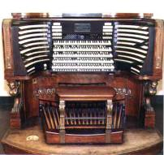 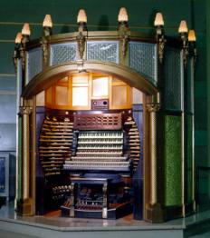 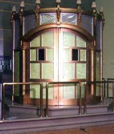 |
Na dalších stránkách najdete klaviatury a registraèní aparát. Souèástí hracího stolu jsou i nìkterá pomocná zaøízení, jejich� popis je v samostatné kapitole. |
Poznámka: Tato stránka je souèástí Anatomie varhan ®, © Ing. Petr Bernat. Všechny animace © Konrad Zacharski